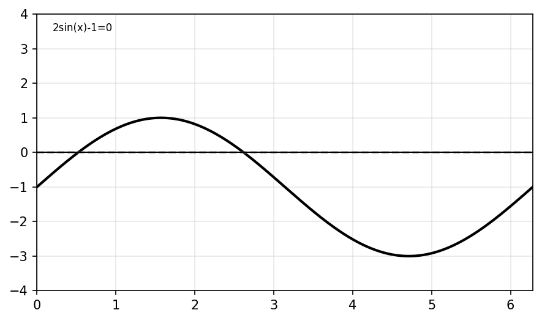
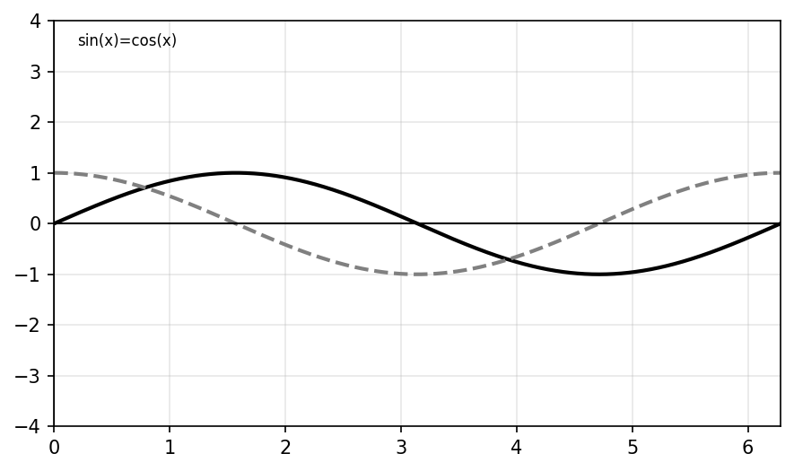
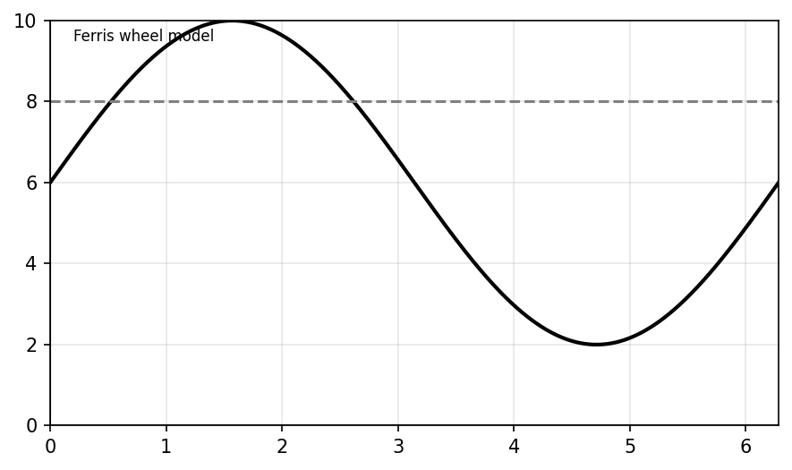
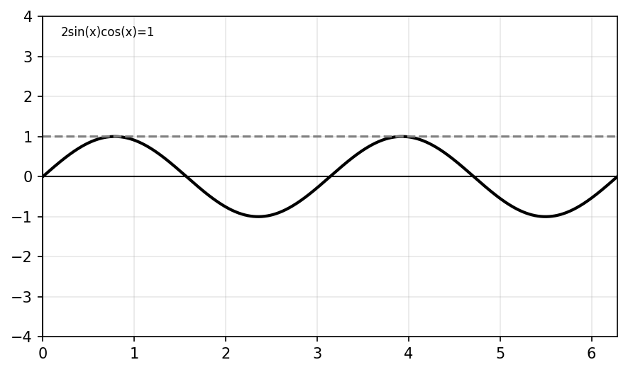
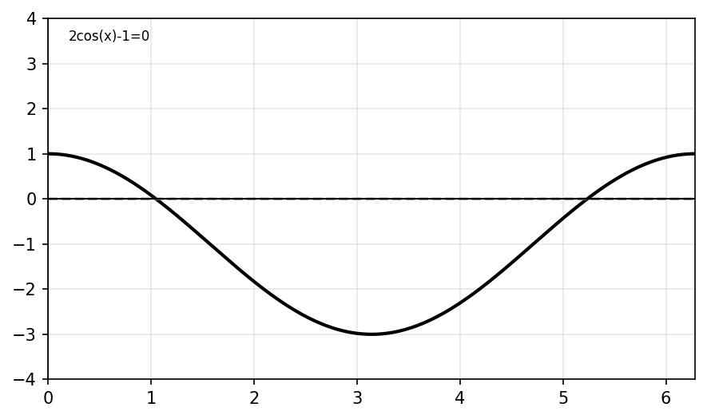
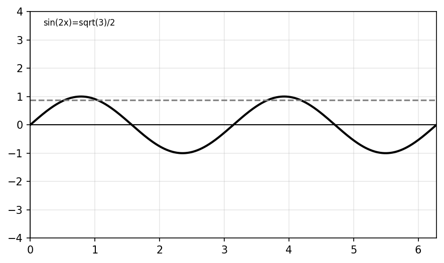
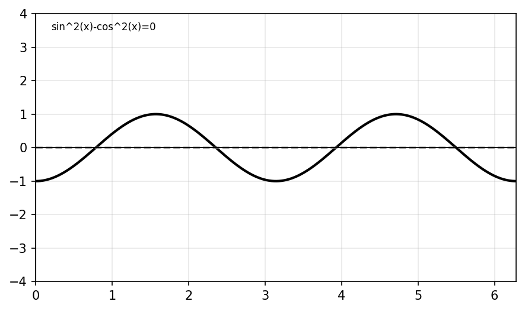

Solve $\sin(x)=\frac12$ on $0\le x<2\pi$.
Solve $\cos(x)=-\frac{\sqrt2}{2}$ on $0\le x<2\pi$.
Solve $\tan(x)=1$ on $0\le x<2\pi$.
Solve $\sin(x)=0$ on $0\le x<2\pi$.
Solve $\cos(x)=1$ on $0\le x<2\pi$.
Evaluate $\sin^{-1}(\frac{\sqrt3}{2})$.
Evaluate $\cos^{-1}(-\frac12)$.
Evaluate $\tan^{-1}(1)$.
Determine whether $\sin(x)=2$ has real solutions. Explain.
State the ranges of inverse sine, inverse cosine, and inverse tangent.
State all angles where $\sin(x)=-1$ on $0\le x<2\pi$.
State all angles where $\cos(x)=0$ on $0\le x<2\pi$.
State all angles where $\tan(x)$ is undefined on $0\le x<2\pi$.
Solve $2\sin(x)-1=0$ on $0\le x<2\pi$.
Solve $2\cos(x)+\sqrt3=0$ on $0\le x<2\pi$.
Solve $3\tan(x)=\sqrt3$ on $0\le x<2\pi$.
Solve $2\sin^2(x)-1=0$ on $0\le x<2\pi$.
Solve $2\cos^2(x)+\cos(x)-1=0$ on $0\le x<2\pi$.
Solve $\sin(x)\cos(x)=0$ on $0\le x<2\pi$.
Solve $\cos(x)(2\sin(x)+1)=0$ on $0\le x<2\pi$.
Solve $\sin(2x)=0$ on $0\le x<2\pi$.
Solve $\sin(2x)=\frac{\sqrt3}{2}$ on $0\le x<2\pi$.
Solve $\cos(2x)=\frac12$ on $0\le x<2\pi$.
Solve $\tan(2x)=-1$ on $0\le x<2\pi$.
Use the graph to solve $2\sin(x)-1=0$ and verify algebraically.

Use the graph to solve $\cos(x)=\sin(x)$.

A student gives only $x=\frac{\pi}{3}$ for $2\cos(x)=1$. Explain the error and give all solutions.
Solve $2\sin(x)-\sqrt2=0$ for all real $x$.
Explain why $\sin(x)=\frac12$ has two solutions on $0\le x<2\pi$.
Explain why inverse trig functions do not automatically give all solutions.
Solve $2\sin^2(x)+\sin(x)-1=0$ on $0\le x<2\pi$ using substitution.
Solve $2\cos^2(x)-3\cos(x)+1=0$ on $0\le x<2\pi$.
Solve $\sin(x)=\cos(x)$ and explain geometrically why the solutions occur.
Use identities to solve $1-\cos^2(x)=\frac34$.
Use identities to solve $2\sin(x)\cos(x)=1$.
Explain why $\tan(x)=0$ has infinitely many solutions.
Compare solving $\sin(x)=\frac12$ and $\sin(2x)=\frac12$.
Explain how graphing verifies trig equation solutions.
Solve $\sin^2(x)-\cos^2(x)=0$ using identities.
Explain why $\sin(x)=2$ has no real solution.
Solve $2\sin(x)-1=0$ on $0\le x<2\pi$. Then verify graphically, identify the corresponding unit-circle coordinates, and explain why exactly two solutions occur.
Solve $2\sin^2(x)+\sin(x)-1=0$ for $0\le x<2\pi$. Use substitution, verify graphically, and explain why one trig value creates two angle solutions.
A student solves $2\cos(x)=1$ and gives only $x=\frac{\pi}{3}$. Explain the error, find all solutions on $0\le x<2\pi$, and justify geometrically why another solution exists.
Solve $\tan(x)=\sqrt3$ for all real $x$. Explain why the solutions repeat every $\pi$ and compare this repetition to sine and cosine periodicity.
The height of a rider on a Ferris wheel is modeled by $h(t)=4\sin(t)+6$. Determine when the rider is at height $8$ during one cycle, interpret both solutions, and explain how graph behavior verifies them.

Solve $2\sin(x)\cos(x)=1$ on $0\le x<2\pi$. Rewrite using a double-angle identity, solve algebraically, and verify graphically.

Compare solving $\sin(x)=\frac12$ and $\tan(x)=1$ on $0\le x<2\pi$. Compare the number of solutions, periodicity, and unit-circle structure.
Solve $2\cos(x)-1=0$. Solve algebraically, verify graphically, locate all solutions on the unit circle, and explain how all representations confirm the same answers.

Solve $\sin(2x)=\frac{\sqrt3}{2}$ on $0\le x<2\pi$. Explain why doubling the angle changes the number of solutions and compare to solving $\sin(x)=\frac{\sqrt3}{2}$.

Solve $\sin^2(x)-\cos^2(x)=0$ on $0\le x<2\pi$. Rewrite using identities, solve using at least two methods, verify graphically, and explain why no other solutions exist.
